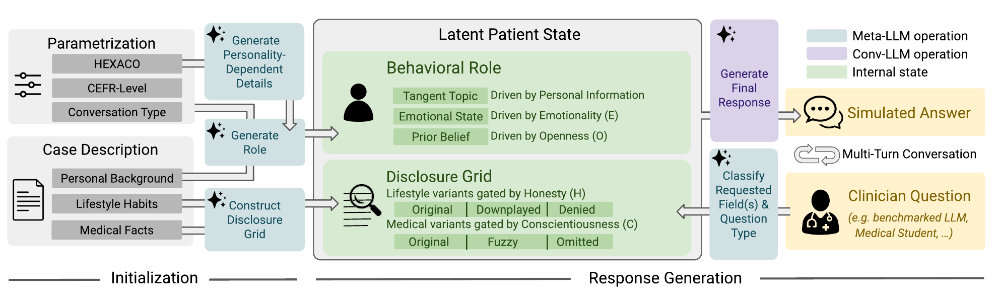
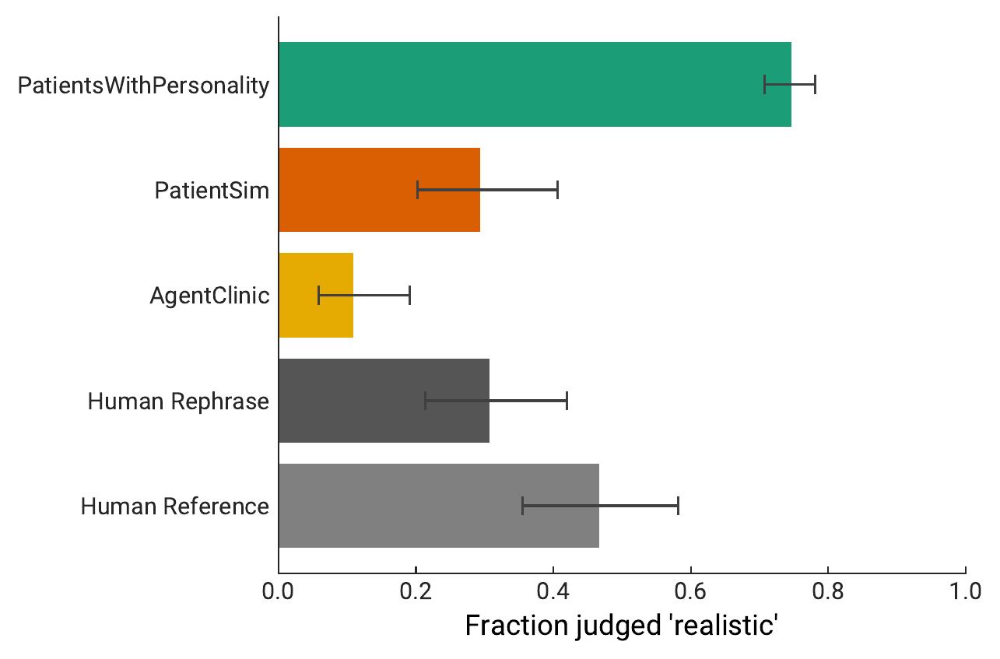
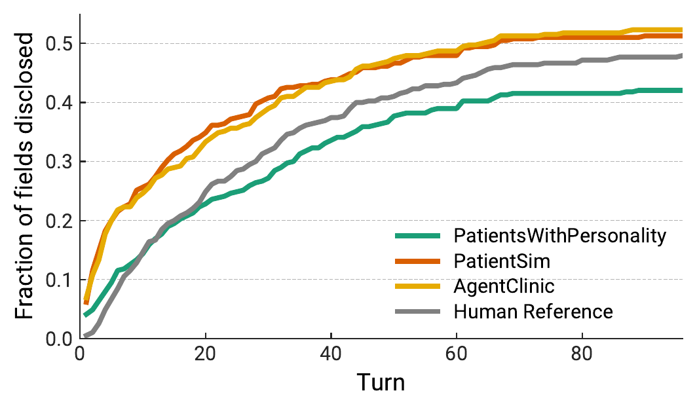
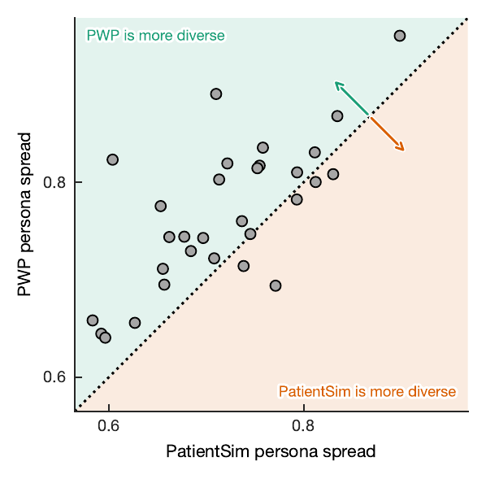
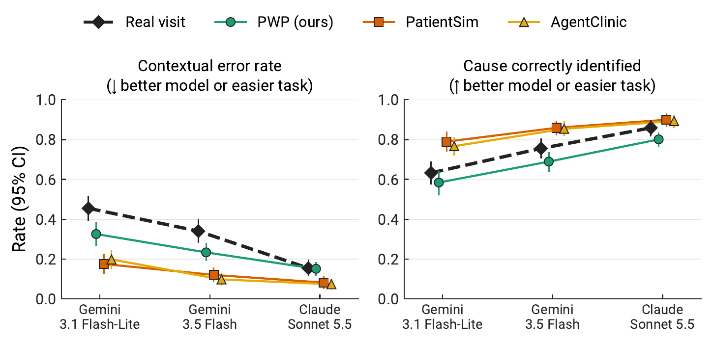

Realistic Patient Simulation through Controlled Diversity and Selective Disclosure
Machine Learning for Health (ML4H) 2026 · Proceedings Track
Pick a case, set the personality sliders, and take a history from a simulated patient.
Waking up the demo can take a few seconds · open in a new tab
Conversations are limited and logged for research. The cases are de-identified vignettes; no medical advice.
Each patient is parametrized over the six HEXACO personality axes. A latent patient state decides how the patient talks and what it may reveal at each turn.

Evaluated on 30 real primary-care encounters from the US Department of Veterans Affairs; nine clinicians rated 540 blinded conversations.
PWP is judged realistic more often than the recorded encounters and prior simulators, and almost never flagged as too informative.


PWP follows how real patients reveal information over the conversation; prior simulators front-load the case.
Clinicians and LLM judges recover the configured traits, and PWP personas span a wider behavioral range than PatientSim on 25 of 30 cases.

On a contextual-care benchmark, PWP comes closest to the error rate of the real visit; prior simulators volunteer the answer and make the task too easy.

@misc{schlager2026patients,
title = {Patients With Personality: Realistic Patient Simulation
through Controlled Diversity and Selective Disclosure},
author = {Schlager, Moritz and Jungmann, Friederike and Schmidgall, Samuel
and Raffler, Philipp and Hartl, Franziska and Wende, Eva
and Ro{\ss}m{\"u}ller, Paula and Ketzer, Conrad and Thompson, Matthew
and Chen, Justin Anthony and Chen, Christina and Hassidim, Avinatan
and Webster, Dale R. and Matias, Yossi and Liu, Yun
and Rueckert, Daniel and Schaekermann, Mike and Hager, Paul},
year={2026},
eprint={2606.17441},
archivePrefix={arXiv},
primaryClass={cs.HC},
url={https://arxiv.org/abs/2606.17441},
}